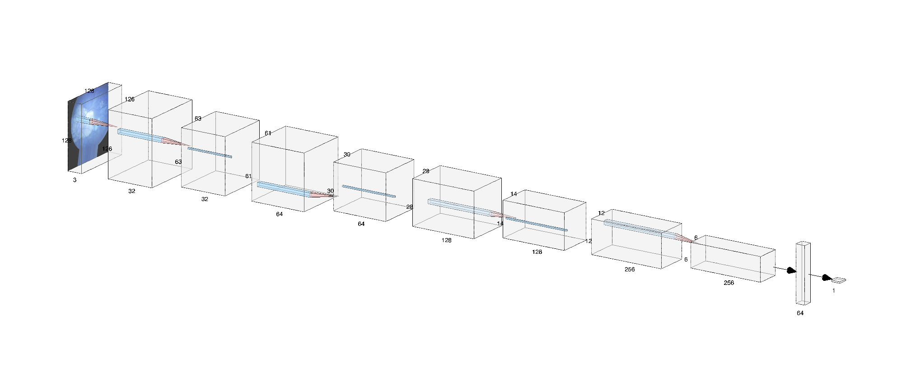

Detecting Myopia with LR and CNN Models
Using a Logistic Regression Model and a Convolutional Neural Network to detect the onset of adolescent myopia
Project Overview
This project was the topic for my IB Extended Essay on Computer Science, where I spent my junior and senior years researching myopia and AI, creating the models, and writing the 4,000 words under the supervision and mentorship of my IB CS teacher.
The project explores the tradeoffs between the two models and analyzes their effectiveness in the context of medical diagnosis for quick and accurate predictions.
Research & Topic Choice
Having been diagnosed with myopia as early as 5th grade, this topic has a personal relevance and meaning to me. Requiring special Orthokeratology (Ortho-k) lenses at night to maintain my level of vision, I feel compelled to explore the future of myopia and how it affects adolescents. Already having conducted research into myopia as a research project in my 10th grade Chemistry class, I sought to further my understanding of the disease and understand how my knowledge of AI and machine learning could play a role in addressing the growing number of those afffected.
After finalizing my EE topic back in October, I began researching existing studies, cases, and analyses that were already implementing AI diagnosis for myopia with a variety of machine learning models. For my investigation, I chose to compare and evaluate the tradeoffs between a Logistic Regression model and a Convolutional Neural Network (CNN) on the basis of accuracy and interpretability. For the remainder of junior year, I created both models, started writing, and continued writing my EE, polishing it throughout the summer.
The Baseline Model: Logistic Regression
I first established a baseline model with Logistic Regression using a dataset from Kaggle derived from the established Mendelson study. The dataset contained few images, requiring data augmentation to train the model on a larger amount of fundus scans.

The model uses 4 feature variables, measurements of the eye that have strong correlation to myopic development. To counteract the imbalanced number of non-myopic to myopic patients, I used the balanced weights algorithm to penalize model learning on non-myopic patients more harshly than myopic. With the 4 feature variables and the balanced class weights algorithm, the model achieved an accuracy of 83.33%. Due to the imbalanced classes, the precision, recall, and F1 scores were low.
The CNN Model
After creating a baseline model for myopia diagnosis, I decided to train a CNN model on 2,000 retinal scans. The Sequential model starts with a Rescaling layer and uses repeating blocks of Conv2D, BatchNormalization, MaxPooling2D, and Dropout layers. The outputs are then fed into a Flatten, Dense, and Dropout layers before being input into the final Dense layer.

I trained the model in batches of 64 for 10 epochs, maintaining the original 224x224 pixel dimensions of the retinal scans. The learning rate was also lowered to 0.0001 to avoid exploding gradients and losses.
model = tf.keras.models.Sequential([
tf.keras.layers.Input(shape=(img_height, img_width, 3)),
tf.keras.layers.RandomFlip("horizontal"),
tf.keras.layers.RandomRotation(0.1),
tf.keras.layers.RandomZoom(0.1),
tf.keras.layers.Rescaling(1./255),
tf.keras.layers.Conv2D(32, (3,3), activation="relu"),
tf.keras.layers.BatchNormalization(),
tf.keras.layers.MaxPooling2D(),
tf.keras.layers.Conv2D(64, (3,3), activation="relu"),
tf.keras.layers.BatchNormalization(),
tf.keras.layers.MaxPooling2D(),
tf.keras.layers.Conv2D(128, (3,3), activation="relu"),
tf.keras.layers.BatchNormalization(),
tf.keras.layers.MaxPooling2D(),
tf.keras.layers.Dropout(0.1),
tf.keras.layers.Conv2D(256, (3,3), activation="relu"),
tf.keras.layers.BatchNormalization(),
tf.keras.layers.MaxPooling2D(),
tf.keras.layers.Dropout(0.1),
tf.keras.layers.GlobalAveragePooling2D(),
tf.keras.layers.Dense(64, activation="relu"),
tf.keras.layers.Dropout(0.2),
tf.keras.layers.Dense(1, activation="sigmoid")
])
EE Content
Discussing the model's architecture throughout my essay, I concluded with evaluating the tradeoffs between the Logistic Regression model and the CNN. In the context of the growing number of myopic people, both models serve an importance in AI predictions paired with human diagnosis.
After finishing both models' architecture, all I had left to do was wrap up the essay, including all the data, code snippets, and graphics as well as internal citations and works cited.
Final Submission
This project served as an opportunity to expand my knowledge of myopia while applying my AI skills. In developing two models and analyzing their performances, I've learned a lot about data processing, data analysis, and model architecture.
I will be submitting my IB CS EE in my senior year after further revisions under the guidance of my IB English teacher and EE supervisor.
Key Learnings
- Gained a real-world understanding of myopia, its growing concern, and the current status of AI medical diagnosis
- Identified the main tradeoffs in medical AI and explored the current state of AI diagnosis
- Managed, processed, and analyzed patient data and retinal scans
- Learned precision, recall, F1 score metrics, balanced class weight algorithm, binary crossentropy loss function, Adam optimizer, sigmoid and ReLU activation functions
- Improved understanding of model architecture and Conv2D, BatchNormalization, MaxPooling2D, and Dropout layers
- Interpreted and analyzed model performance with Confusion Matrices, graphs, and additional metrics
- Practiced proper research and academic writing, and critical thinking skills through a self-directed research paper
Future Enhancements
This project served as an introductory application of my AI knowledge while exploring more about the myopia. If given more time to explore each model, I would have liked to test more balanced datasets, look into Grad-CAM for the CNN, measure additional metrics, and include more layers to create a more sophisticated CNN model. Additionally, I would like to learn about other CNN models aside from Sequential and maybe create additional models to compare and contrast from.